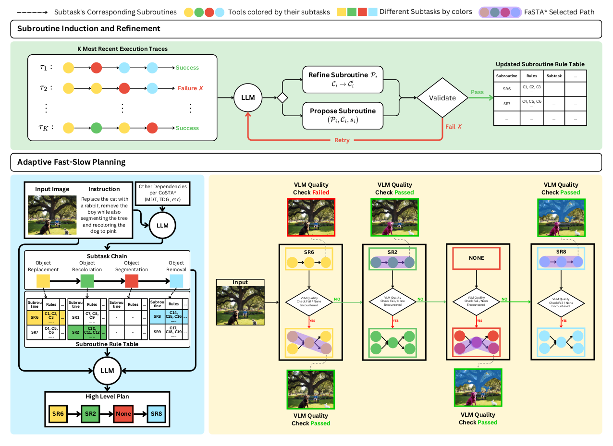
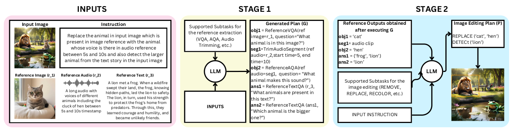
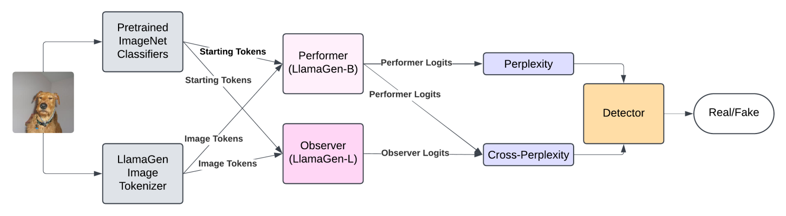
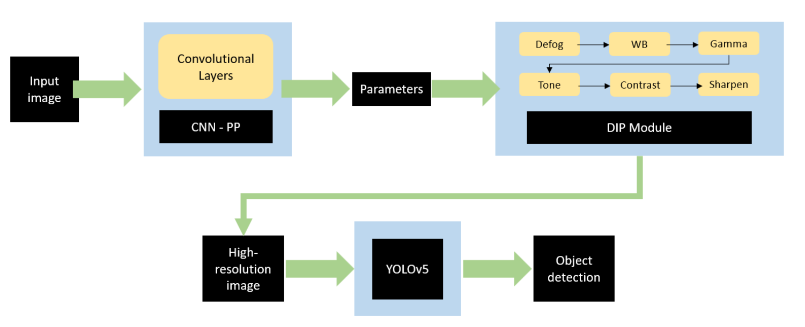
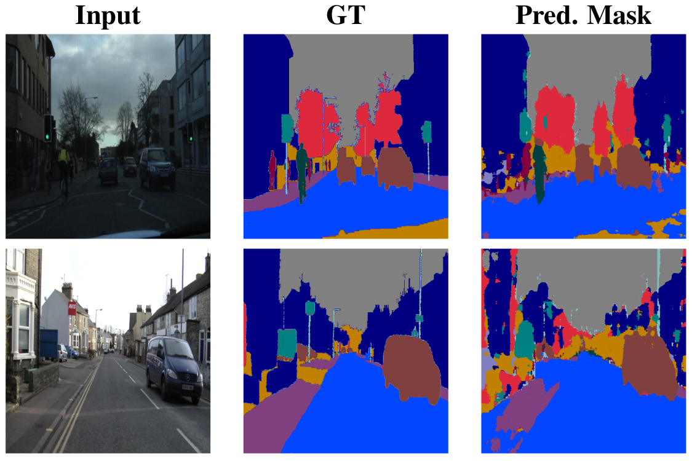

|
Rishie Raj I am a graduate researcher, currently working on audio-visual LLMs and multi-modal agentic systems. I graduated with a master's degree in Robotics from the University of Maryland, College Park, where most of my coarsework was in Computer Vision (CMSC472) and Multi-modal Learning (CMSC848K, CMSC848M). |

|
ResearchMy research interests primarily include multi-modal learning, audio-visual learning, and agentic systems. Below are some of my recent works. |

|
AURA: A Fine-Grained Benchmark and Decomposed Metric for Audio-Visual Reasoning
Siminfar Samakoush Galougah, Rishie Raj, Sanjoy Chowdhury, Sayan Nag, Ramani Duraiswami arXiv, 2025 project page / arXiv The first MCQ-type benchmark designed to evaluate SOTA Audio-Visual Large Language Models and Omni-Modal Language Models on fine-grained cognitive tasks. |
|  |
FaSTA*: Fast-Slow Toolpath Agent with Subroutine Mining for Efficient Multi-turn Image Editing
Advait Gupta, Rishie Raj, Dang Nguyen, Tianyi Zhou arXiv, 2025 code / arXiv A cost-efficient neurosymbolic agent with fast-slow planning to address challenging multi-turn image editing tasks. |
Other ProjectsHere are some other projects that I've worked on as part of my coursework or personal interest. |
|  |
Beyond Text: An LLM Agent Approach to Multimodal Reference-Guided Image Editing
Advait Gupta, Rishie Raj, Nithin Skantha Murugan CMSC848M, 2025 paper A novel LLM-driven agentic framework that handles indirect, multimodal instructions without dedicated agent retraining. |
|  |
A Novel Approach for Detecting AI-Generated Images in Zero-Shot Setting
Nithin Skantha Murugan, Krishna Taduri, Rishie Raj CMSC848K, 2024 paper A novel approach for detecting AI-generated images based on cross-perplexity and perplexity computations using autoregressive image generation models. |
|  |
Parameterized Defogging Network for Object Detection in Adverse Weather Conditions
Rishie Raj, Uthappa Madettira, Nathan Nussbaumer, Sahaj Singh, Lucas Leitao CMSC472, 2024 paper / poster A small convolutional neural network model designed to predict the parameters of differentiable image processing functions with the aim to defog the input images. |
|  |
Real Time Semantic Segmentation using Efficient Neural Network
Rishie Raj, Uthappa Madettira ENPM673, 2024 paper / slides An implementation of Efficient Neural Network (E-Net), finetuned for real-time semantic segmentation, which is specifically designed for tasks requiring low latency operation. |
|
Design and source code from Jon Barron's website |